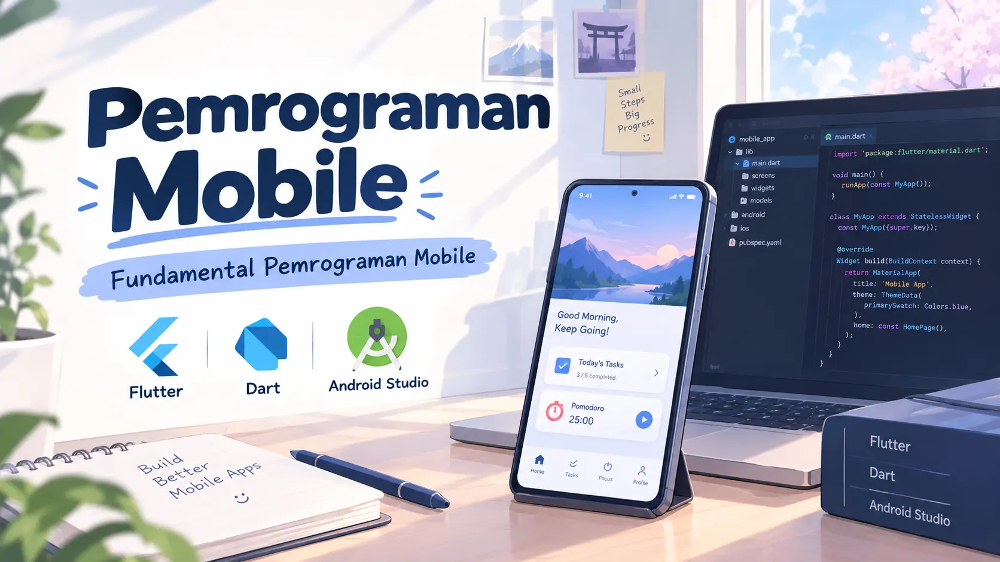

Pemrograman Mobile — Pengenalan Flutter
Rekaman kuliah minggu ini membahas konsep dasar pemrograman web dengan pengenalan Flutter
Klik untuk mulai menonton
Tentang video ini
Video ini membahas pengenalan web melalui dasar HTML atau Hypertext Markup Language, yang menjadi pondasi utama dalam pengembangan halaman web.
ALTERNATIF PEMBELAJARAN
Dengarkan rekaman kuliah
Rekaman kuliah minggu ini membahas konsep dasar pemrograman web dengan pengenalan HTML